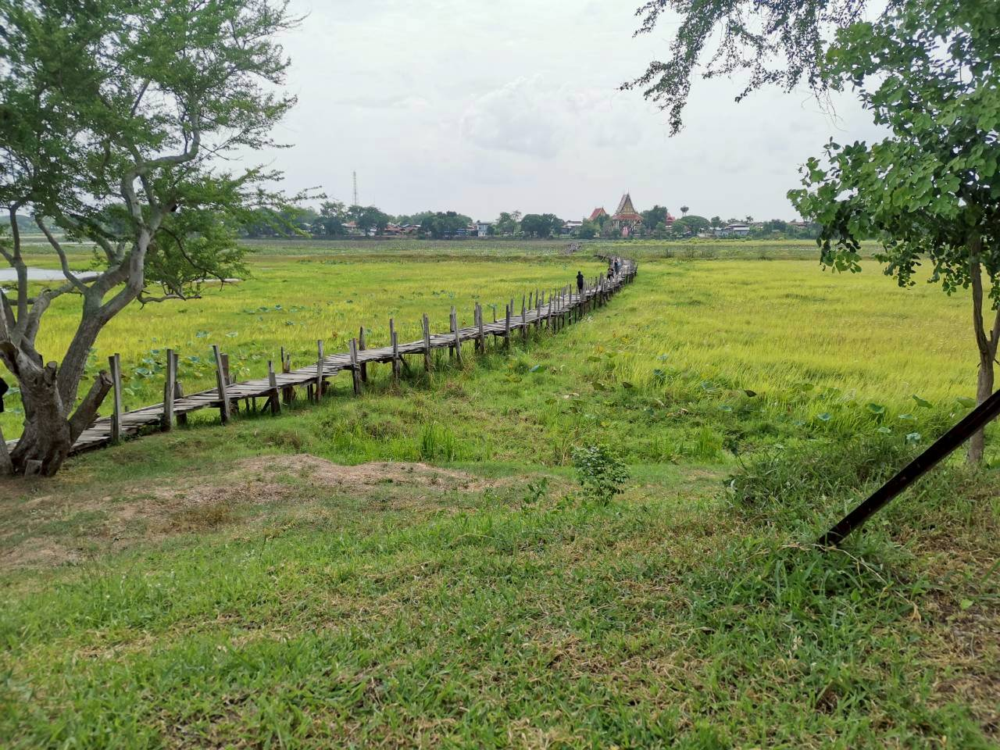
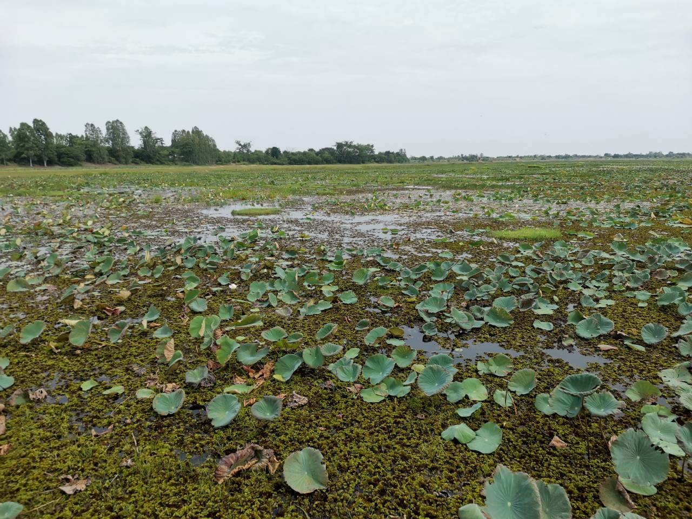
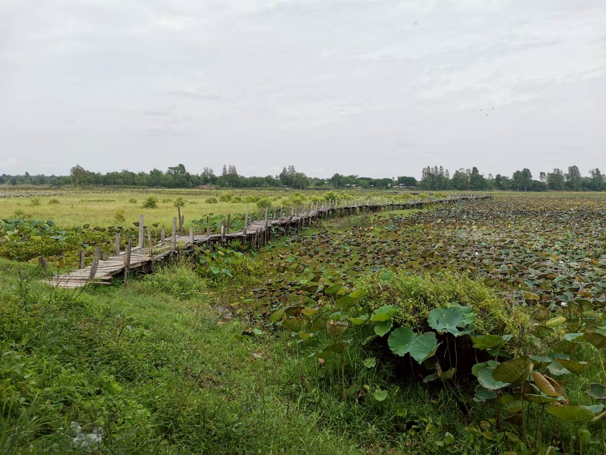
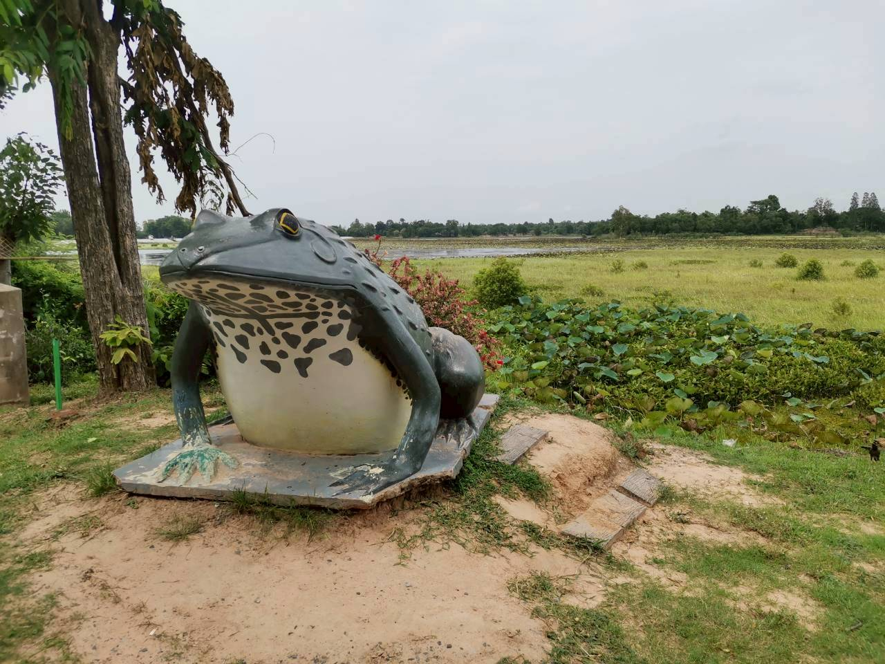
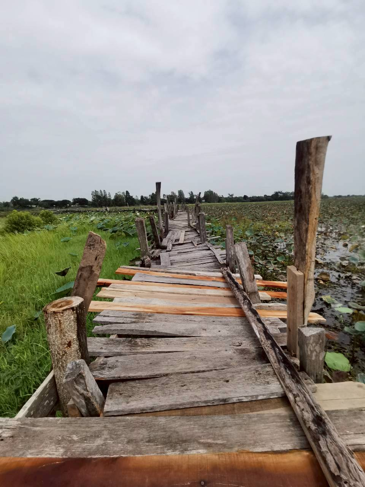

📍 อำเภอแกดำ จังหวัดมหาสารคาม
สะพานไม้แกดำ
สายใยแห่งศรัทธา สะพานไม้โบราณข้ามหนองแกดำยาวกว่า 1,000 เมตร มนต์เสน่ห์แห่งวิถีชีวิตและธรรมชาติที่คุณต้องมาสัมผัส






เลือกหมวดหมู่ข้อมูลท่องเที่ยว
📜
ประวัติความเป็นมา
เรื่องราวภูมิปัญญาท้องถิ่นและการร่วมใจสร้างสะพานนับร้อยปี
📸
ภาพบรรยากาศ
ชมภาพถ่ายมุมสวยๆ ของสะพานและธรรมชาติรอบบึงแกดำ
🌾
ฤดูกาลน่าเที่ยว
ไฮไลต์ความสวยงามและช่วงเวลาที่ไม่ควรพลาดในแต่ละฤดู
🚗
การเดินทาง & แผนที่
เส้นทาง เวลาเปิด-ปิด คำแนะนำ และแผนที่ Google Maps
❓
คำถามพบบ่อย
ข้อมูลค่าเข้าชม สิ่งอำนวยความสะดวก และที่จอดรถ